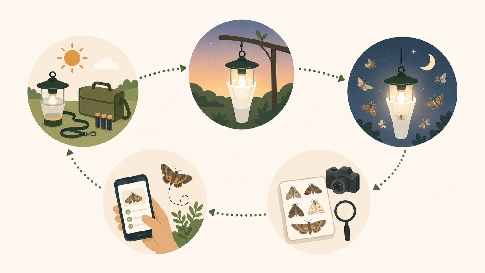

何を比べるか
光源ではなく、トラップ構造を比べます。入口部、衝突板、漏斗、捕獲部、逃げにくさを含めて評価します。
Protocol
今年度は、光源を10W級ブラックライトにそろえ、トラップ構造の違いが飛来から残留までの過程にどう影響するかを比較します。参加者の人数や機材に応じて、A型またはB型の方法で調査します。
光源ではなく、トラップ構造を比べます。入口部、衝突板、漏斗、捕獲部、逃げにくさを含めて評価します。
飛来、接触、進入、逃出、残留、同定を分けて記録します。最終的な残留数だけでは判断しません。
2台を同時に置ける場合はA型、1台ずつ試す場合はB型で参加します。
調査に参加する人が、実験型を選び、当日の流れを確認し、必要な記録を残せるようにまとめています。
今年度は、全国モニタリングを始める前の準備段階です。目的は、長期的に使える標準トラップを決めるために、トラップ構造の違いが記録過程に与える影響を調べることです。
トラップ構造。入口部、衝突板、漏斗、捕獲部、逃げにくさ、観察・回収のしやすさを比べます。
光源、点灯時間、設置条件、観察窓、記録項目をできるだけそろえます。光源は原則として10W級ブラックライトに固定します。
市民科学では、参加できる人数や機材が地点ごとに異なります。このプロトコルでは、2つの実験型を用意します。大事なのは、全国の別々の場所を単純に比べることではなく、同じ地点の中で構造を比べることです。
| 実験型 | どんな人向けか | やること | データの強さ |
|---|---|---|---|
| A型：同日ペア比較 | 2台を同時に設置できる人・チーム | 同じ日・同じ地点で2構造を同時に比べる | 最も強い比較データ |
| B型：同一地点クロスオーバー比較 | 1台ずつなら設置できる人 | 同じ地点で日を変えて構造を入れ替える | 解析に使える比較データ |
| 補助記録 | 1構造だけ、または単発で参加する人 | 季節記録、分布記録、運用確認として記録する | 構造比較の主解析には使わない |
A型とB型は、どちらも同じ地点の中で構造を比べる方法です。場所ごとに異なる構造を使った記録を単純に比べることはしません。
同じ日・同じ地点で、2つのトラップ構造を同時に設置します。日付、天候、季節の影響をそろえやすいため、構造差を最も見やすい方法です。
1台ずつしか設置できない場合は、同じ地点で日を変えて構造を入れ替えます。日付や天候の差が混ざりやすいため、気温、風、月齢、調査時間を必ず記録します。
| 配列 | 実施順 | 使いどころ |
|---|---|---|
| ABBA | A → B → B → A | 標準的な配列 |
| BAAB | B → A → A → B | ABBAと組み合わせる |
| ABAB / BABA | 交互に入れ替える | 短期間で繰り返す場合 |
当日は、実験型を選び、条件をそろえ、観察窓で記録し、回収後に同定できる形で整理します。

この試験では、最終的な残留数だけでなく、どの段階で差が出たかを分けて見ます。
飛来 → 接触 → 進入 → 逃出 → 残留 → 同定
| 段階 | 数えるもの | 定義 | 注意点 |
|---|---|---|---|
| 飛来 | 観察イベント | 光源またはトラップ中心から半径1 m以内に入ったイベント | 半径2 m以内の接近は任意項目として記録できます。偶然通過と完全には分けられないため、標準範囲を決めて数えます。 |
| 接触 | 観察イベント | 光源、入口部、衝突板、漏斗、誘導部、トラップ外面などに触れる、または着地すること | 接触先を、光源、入口部、衝突板、漏斗・誘導部、外面、不明に分けて記録します。 |
| 進入 | 観察イベント | 個体の全身が、決められた進入境界を越えて捕獲部に入ること | 進入境界は構造ごとに図や説明で確認します。 |
| 逃出 | 観察イベント | 進入後の個体が捕獲部の外へ出ること | 見失っただけでは逃出にしません。明確に外へ出た場合のみ数えます。 |
| 残留 | 回収個体 | 回収時点で捕獲部に残っていた個体 | 生存、死亡、損傷、逃出疑いを分けて記録します。 |
| 同定 | 確認済み記録 | 写真または標本で、種名、属、種群などに確認すること | 難種は無理に種名まで落とさず、同定レベルと確度を記録します。 |
飛来、接触、進入、逃出は観察イベントです。同じ個体が複数回数えられる可能性があります。残留は回収時の個体数です。この2つを混同しないようにします。
構造差を見るには、調査時間と観察努力量をそろえる必要があります。時計時刻だけでなく、日没からの経過時間を記録します。
日没後30分以内に点灯し、3時間後に消灯・回収します。夏場は19:00〜22:00、日没が早い時期は18:00〜21:00が目安です。
18:00〜22:00のように4時間行う場合は、最初の3時間を標準調査、残りを延長分として扱います。主解析では原則として標準3時間を使います。
点灯後30分、60分、90分、120分を目安に、それぞれ5分間観察します。人手が少ない場合は観察窓を減らしてもよいですが、観察分数を必ず記録します。
| 実施時間 | 扱い | 解析での扱い |
|---|---|---|
| 19:00〜22:00 | 標準3時間調査 | 主解析に使用 |
| 18:00〜21:00 | 標準3時間調査 | 主解析に使用 |
| 18:00〜22:00 | 延長調査を含む | 最初の3時間を主解析、延長分は補助扱い |
| 2時間未満 | 短時間調査 | 原則として補助データ |
A型では、2つの構造で点灯時刻、消灯時刻、観察窓をそろえます。B型では、同じ地点で毎回できるだけ同じ標準時間を使います。調査時間が異なる場合は effort_hours と observation_minutes を必ず記録します。
最低限、以下がそろっていれば、構造比較のデータとして扱いやすくなります。
| 区分 | 記録する項目 | なぜ必要か |
|---|---|---|
| 実験型 | experiment_type, data_rank | A型、B型、補助記録を区別するため |
| 地点・参加者 | site_id, participant_id | 場所差と参加者差を考慮するため |
| 構造・機材 | trap_structure, trap_id, light_id | どの構造と機材を使ったか確認するため |
| 時間 | sunset_time, light_on_time, light_off_time, effort_hours | 調査時間の違いを補正するため |
| 環境 | temperature, wind, rainfall, cloud_cover, moon_phase | 天候や月齢の影響を考慮するため |
| 結果 | retained_count, photo_id, specimen_id, identification_level | 回収個体と同定結果を対応させるため |
| 公開管理 | public_flag, sensitive_species_flag | 希少種や公開配慮が必要な記録を管理するため |
| 区分 | 今年度の扱い | 注意点 |
|---|---|---|
| トラップ構造 | 比較する | 入口部、衝突板、漏斗、捕獲部、逃げにくさを含めて評価します。 |
| 光源 | 固定する | 原則として10W級ブラックライトを使います。型番や光源IDは記録します。 |
| 時間 | そろえる | 標準3時間調査を基本にします。 |
| 設置条件 | できるだけそろえる | 光源の高さ、向き、入口までの距離、周辺環境を記録します。 |
| 観察努力量 | 記録する | 観察窓、観察分数、観察者IDを残します。 |
別々の場所で違う構造を使って単純比較すると、構造比較には使いにくくなります。
調査時間差が記録数に影響します。effort_hours を必ず記録します。
飛来、接触、進入、逃出は観察イベントです。同じ個体が複数回数えられる可能性があります。
光源に触れたのか、トラップ本体に触れたのかで意味が変わります。
同定できない個体は、属、種群、未同定として扱い、同定レベルと確度を残します。
論文化では、個体数そのものより、比較可能な地点数、有効トラップナイト、A型ペア比較、B型クロスオーバー地点が重要です。
| 目標 | 比較可能な地点数 | 有効トラップナイト | A型ペア比較 | B型クロスオーバー地点 |
|---|---|---|---|---|
| 最低ライン | 10〜15地点 | 100以上 | 30ペア以上 | 10地点以上 |
| 標準目標 | 20〜30地点 | 200〜300 | 50〜80ペア | 15〜25地点 |
| 理想目標 | 30地点以上 | 300〜500 | 80〜100ペア | 20〜25地点以上 |
同じ地点・同じ夜に多くの個体が得られても、それだけで独立したサンプルが増えたとは考えません。地点と日をまたいだ反復を増やすことを重視します。
A型とB型は統合解析できます。ただし、単純に混ぜるのではなく、experiment_type または data_rank として区別して扱います。まずA型、B型を別々に確認し、同じ方向の構造差が見られるかを確認したうえで統合します。
記録数または残留数 ~ トラップ構造 + 実験型 + トラップ構造 × 実験型 + 気温 + 風 + 月齢 + 調査時間 + 地点 + 日付 + 参加者
場所ごとの蛾の多さ、日ごとの条件、参加者ごとの記録の癖を考慮したうえで、トラップ構造の効果を見ます。